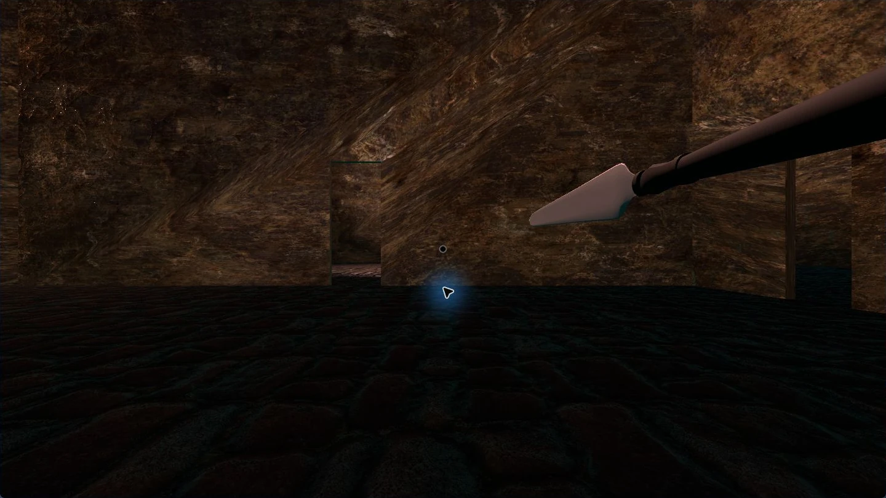
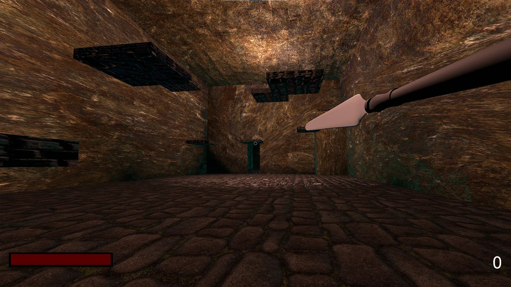
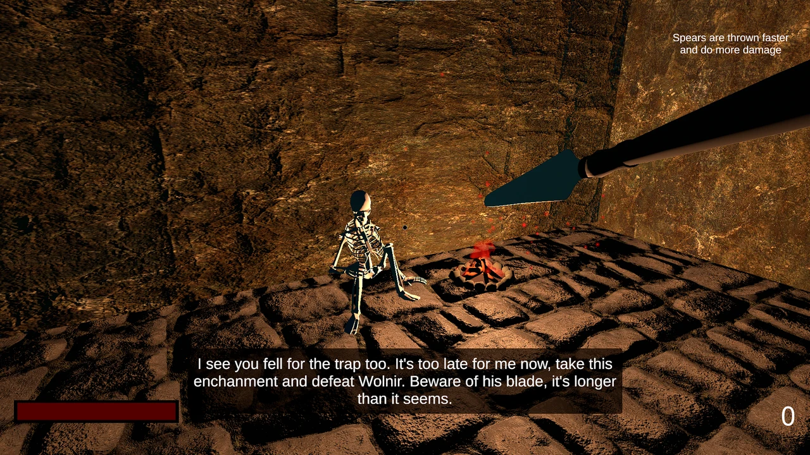
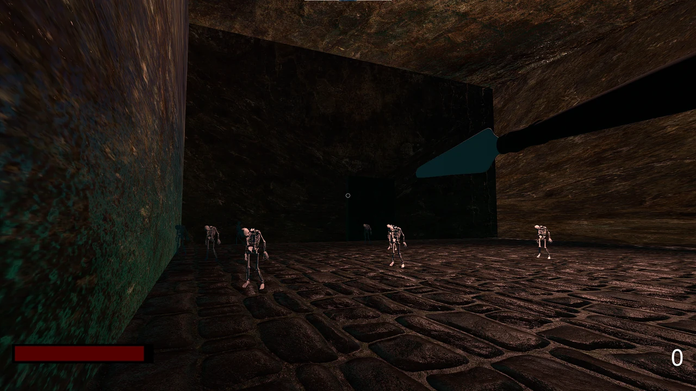
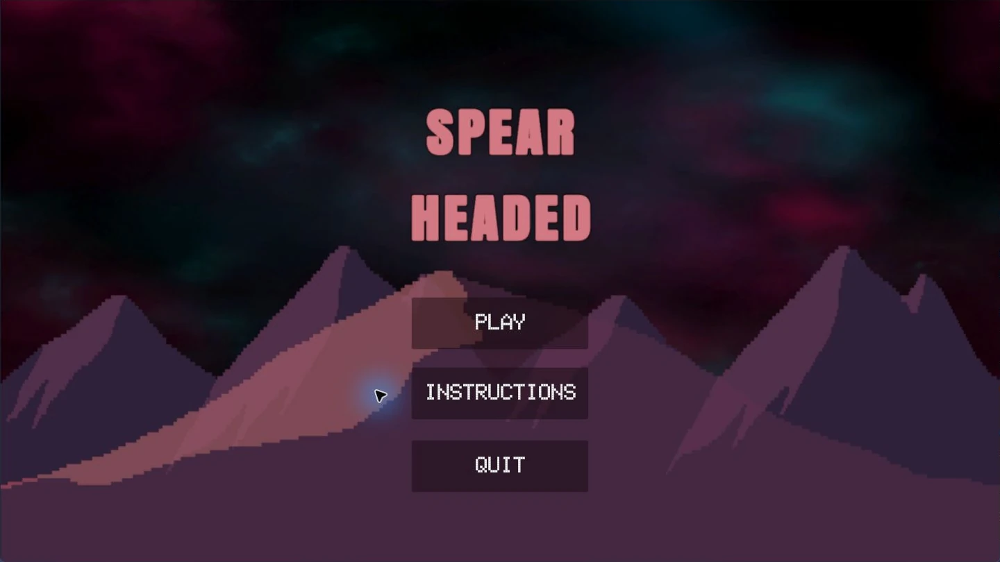

All projects
Unity game · CCT270
Spear Headed
A first-person dungeon game with spear combat, platforming, and three routes to the Skeleton King.










A dungeon built around three paths
The original prototype used limited ammunition and waves of enemies. After testing, the team switched to a spear recharge and three rooms that lead to the boss. A hidden area rewards players who explore.
The project report credits Isuru with scripting most of the major game functions, collaborating on level design, and finalizing the visuals.
What it uses
- Unity
- First-person combat and platforming
- Level design and playtesting
Credits
Team project with Lucas Liu and Xiangquan Xu. The coursework was supplied as a Windows build.